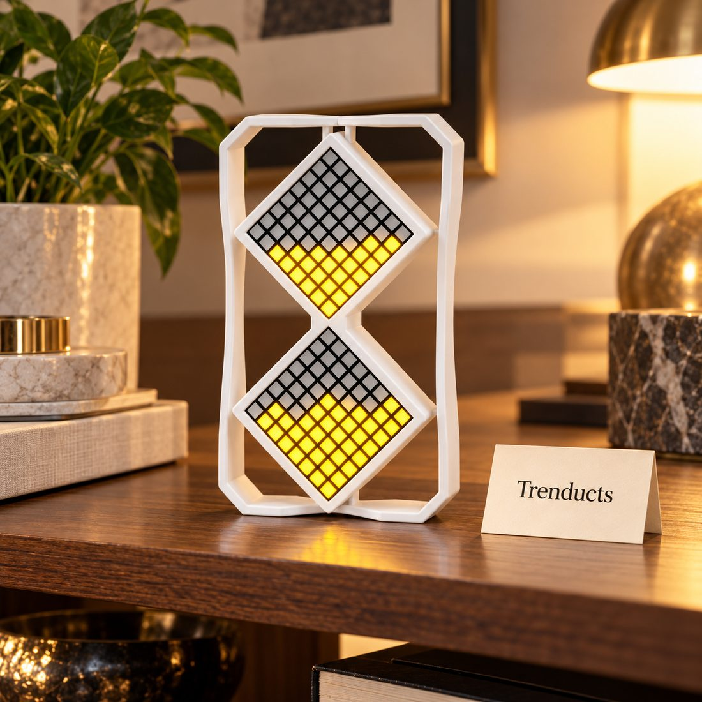
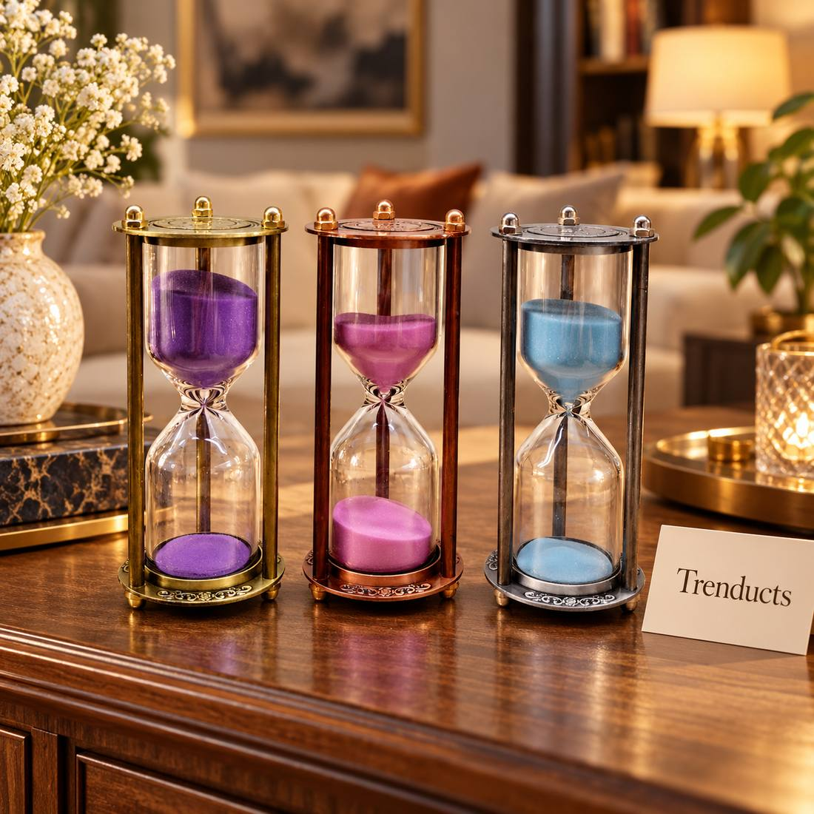

Phones are wonderful study tools until they are not. A student opens the timer app to start a study session and, two notifications later, is watching cricket highlights. For many students preparing for matric, FSc, O and A Levels, or entrance tests, the phone is the single biggest distraction in the room.
One simple fix is old-fashioned: an hourglass. A sand timer does one job, has no notifications and sits on the desk as a visible reminder of the session you have committed to.
What the Pomodoro idea is
The Pomodoro technique, created by Francesco Cirillo, breaks work into focused blocks with short breaks in between. The classic version is twenty-five minutes of work followed by a five-minute break, with a longer break after four rounds. The idea is not the exact numbers but the rhythm: concentrate fully for a fixed period, then rest properly.
Why sand works better than a phone
- You can see time passing, which creates gentle pressure to keep going.
- There is nothing to unlock, so you do not get pulled into apps.
- Flipping it is a small ritual that marks the start of serious work.
- It is silent, which suits shared rooms and late-night study.

The phone can then go into another room or into a drawer, which is where it does the least damage during revision.
Choosing timer lengths
Sand timers come in fixed durations, so pick ones that match how you study. A fifteen-minute timer suits younger children doing homework and anyone warming up after a break. A thirty-minute timer suits most older students for one focused block. Some students like having two: a long one for work and a short one for breaks, so the break does not quietly turn into an hour.
Electronic hourglass-style timers with gravity sensing offer adjustable durations while keeping the same flip-to-start habit, which is useful if you want to vary block length.
A sample evening routine for exam season
- Flip a thirty-minute timer: past paper questions, phone in another room.
- Flip a short timer: stand up, drink water, stretch.
- Repeat three or four times.
- Take a longer break for dinner or chai with family.
- Finish with one lighter block of revision notes or flashcards.
Track how many blocks you finish each evening on a small chart. Seeing the count grow over a week is motivating, especially before board exams.
Tips for parents
Younger children respond well to a visible timer. Instead of repeatedly saying, "Finish your homework," set a timer and agree that when the sand runs out, they get a short break. It turns homework into a game with clear rules and cuts down on arguments. Keep timers out of reach of very small children who might drop glass ones.

Making the desk part of the habit
A tidy desk helps. Keep only the books for the current block on it. Put the hourglass in a fixed spot, perhaps beside the lamp. Over a few weeks, simply flipping the timer starts to tell the brain it is time to focus.
When focus is hard
Some days nothing seems to work. On those days, shorten the block rather than giving up. Flip a fifteen-minute timer and promise yourself only one block. Starting is usually the hardest part, and once the sand is running, many students find they want to finish the topic. If you are still distracted after two attempts, take a proper break, eat something and come back later.
Finding a timer
Metal-framed and pillar-style sand timers look good on a study desk and survive daily use. You can find a range of hourglass timers, including fifteen and thirty-minute versions and an electronic option, at Trenducts.pk with delivery across Pakistan.
Small rituals, real results
No timer will study for you. What a sand timer does is make starting easier and quitting early more noticeable. For many students, that small nudge is exactly what turns a distracted evening into a productive one.